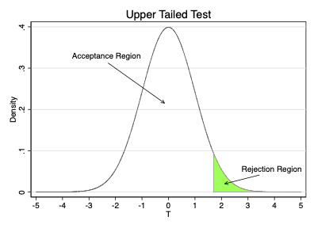
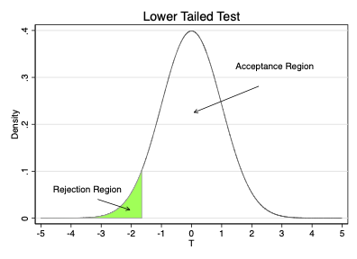
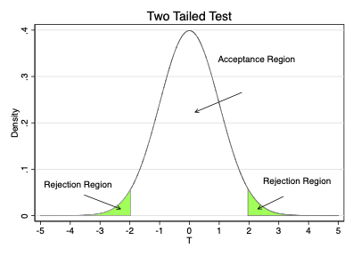

Ordinary Least Squares
EC655 - Econometrics
Justin Smith
Wilfrid Laurier University
Fall 2023

Estimating Parameters of the Linear Regression Model
Estimation by Method of Moments
Recall that the population linear regression model is
\[y = \mathbf{x}\boldsymbol{\beta} + u\]
We wish to estimate the slope parameters of this model
The first step is to collect a sample \(\{(\mathbf{x}_{i},y_{i}): i=1,2,...,n)\}\)
Samples are drawn independently from the same distribution
This means each is independent and identically distributed (iid)
The usual method we use for estimation is Ordinary Least Squares (OLS)
- Minimize the sum of the squared residuals
Estimation by Method of Moments
You get the same result with the Method of Moments
- Replace the unknown population moments with their sample equivalents
Above we found that the population slopes are
\[\boldsymbol{\beta}=(\textbf{E}[\mathbf{x'x}])^{-1} \textbf{E}[\mathbf{x}'y]\]
MOM replaces population expectations with sample means across \(n\) observations
\[\boldsymbol{\hat{\beta}}=\left ( \frac{1}{n}\sum_{i=1}^{n}\mathbf{x_{i}'x_{i}} \right )^{-1} \left ( \frac{1}{n} \sum_{i=1}^{n}\mathbf{x}_{i}'y_{i}\right ) \]
Here \(i\) indexes the sample observation
\(\mathbf{x}_{i}\) is a \(1 \times (k+1)\) vector, so \(\mathbf{x_{i}'x_{i}}\) is a \((k+1) \times (k+1)\) matrix
Estimation by Method of Moments
Recall partitioned matrix multiplication
We can rewrite
\[\left ( \sum_{i=1}^{n}\mathbf{x_{i}'x_{i}} \right ) = \mathbf{X'X}\] \[\left ( \sum_{i=1}^{n}\mathbf{x}_{i}'y_{i}\right ) = \mathbf{X'y}\]
Substituting in, an equivalent expression for the estimated slope
\[\boldsymbol{\hat{\beta}}=\left ( \mathbf{X'X}\right )^{-1} \mathbf{X'y}\]
Ordinary Least Squares
The Ordinary Least Squares (OLS) estimator is
\[\boldsymbol{\hat{\beta}}=\left ( \mathbf{X'X}\right )^{-1} \mathbf{X'y}\]
You can use \(\boldsymbol{\hat{\beta}}\) to obtain predicted values of \(y\)
\[\hat{\mathbf{y}} = \mathbf{X}\boldsymbol{\hat{\beta}}\]
By definition, the OLS residual is the difference between \(\mathbf{y}\) and its predicted value
\[\mathbf{y} = \mathbf{X}\boldsymbol{\hat{\beta}} + \mathbf{\hat{u}}\]
Ordinary Least Squares

Algebraic Properties of OLS
Introduction
OLS is one way to estimate a linear regression model
It is important to know how well the method works
One way is to examine the “fit” of our regression line
How close to the line are the datapoints?
Does \(\mathbf{x}\) explain a large fraction of variation in \(y\)?
These are the algebraic properties of our estimator
- Mathematical relationships hold true in each sample
Different from the statistical properties
- The behaviour of estimators across (hypothetical) repeated samples
Properties of the Residuals
The first properties relate to the OLS residuals
\[\mathbf{X}'\hat{\mathbf{u}} = \begin{bmatrix} \sum_{i=1}^{n}\hat{u}_{i}\\ \sum_{i=1}^{n}x_{1i}\hat{u}_{i}\\ \vdots\\ \sum_{i=1}^{n}x_{ki}\hat{u}_{i}\\ \end{bmatrix} = \mathbf{0}\]
The sum (and the mean) of the residuals is zero
The sample covariance between \(x\) and the residuals is zero
These are the sample versions of \(\textbf{E}[\mathbf{x}'\mathbf{u}]=\mathbf{0}\)
\(R^2\)
The Coefficient of Determination (\(R^2\)) measures the fraction of the variation in \(y\) that is explained by the independent variables \[R^2 = \frac{ESS}{TSS}\]
TSS is the Total Sum of Squares \[TSS = \sum_{i=1}^{N} (y_{i} - \bar{y})^2 = \mathbf{(Ny)'Ny} = \mathbf{y'Ny}\]
where \(\mathbf{N} = (\mathbf{I} - \frac{1}{n}\mathbf{11'})\) is a symmetric, idempotent matrix
- \(\mathbf{1}\) is a vector of all ones
\(\mathbf{N}\) turns a vector into deviations from means
\(R^2\)
ESS is the Explained Sum of Squares \[ESS = \sum_{i=1}^{N} (\hat{y}_{i} - \bar{y})^2 =\mathbf{(N\hat{y})'N\hat{y}} = \mathbf{\hat{y}'N\hat{y}}\]
And the Residual Sum of Squares (SSR) is \[SSR= \sum_{i=1}^{N} (\hat{u}_{i})^2 = \hat{\mathbf{u}}'\hat{\mathbf{u}}\]
\(R^2\) ranges between 0 and 1
\(R^2 = 0\) means that \(\mathbf{x}\) explains none of the variation in \(y\)
\(R^2 = 1\) means that \(\mathbf{x}\) explains all of the variation in \(y\)
\(R^2\)
\(R^2\) is also equal to the square of correlation coefficient between \(y_{i}\) and \(\hat{y}_{i}\)
An important relationship between sums of squares is \[TSS= ESS + SSR\]
- Movement of \(y_{i}\) away from its average is explained by regression and other factors
Using matrix notation,
\[\mathbf{\hat{y}'\mathbf{N}\hat{y}} = (\mathbf{X}\boldsymbol{\hat{\beta}} + \hat{\mathbf{u}})'\mathbf{N}(\mathbf{X}\boldsymbol{\hat{\beta} + \hat{\mathbf{u}}} )\] \[= (\boldsymbol{\hat{\beta}}' \mathbf{X}'+ \hat{\mathbf{u}}')(\mathbf{N}\mathbf{X}\boldsymbol{\hat{\beta} + \mathbf{N}\hat{\mathbf{u}}} )\] \[= \boldsymbol{\hat{\beta}}' \mathbf{X}' N\mathbf{X}\boldsymbol{\hat{\beta}} + \boldsymbol{\hat{\beta}}' \mathbf{X}' \mathbf{N}\hat{\mathbf{u}} + \hat{\mathbf{u}}'N\mathbf{X}\boldsymbol{\hat{\beta} +\hat{\mathbf{u}}' \mathbf{N}\hat{\mathbf{u}}}\]
\(R^2\)
Because \(\mathbf{N}\hat{\mathbf{u}} =\hat{\mathbf{u}}\) and \(\mathbf{X}'\hat{\mathbf{u}} = \mathbf{0}\) we can simplify to
\[= \boldsymbol{\hat{\beta}}' N\mathbf{X}' \mathbf{X}\boldsymbol{\hat{\beta}} +\hat{\mathbf{u}}' \hat{\mathbf{u}} = \mathbf{\hat{y}'N\hat{y}}+\hat{\mathbf{u}}' \hat{\mathbf{u}}\]
We noted above that \(ESS = \mathbf{\hat{y}'N\hat{y}}\) and \(SSR=\hat{\mathbf{u}}' \hat{\mathbf{u}}\)
As a result, you can reexpress \[R^2 = \frac{ESS}{TSS} = 1- \frac{SSR}{TSS}\]
CautionBe cautious when using \(R^2\). In real applications, \(R^2\) is often very low, but this does not mean the regression is “bad” or that we haven’t measured a causal relationship. It just means we have not captured all factors that explain \(Y\)
Standard Error of Regression (SER)
Can also measure fit with spread of data around regression line
The residual \(\hat{\mathbf{u}}\) is deviation of \(\mathbf{y}\) from prediction \[\mathbf{\hat{u}} = \mathbf{y} - \mathbf{X}\boldsymbol{\hat{\beta}}\]
The standard error of regression (SER) is the standard deviation of \(\hat{u}_{i}\)
- The average distance of \(y_{i}\) from its prediction \(\hat{y}_{i}\)
\[SER = s_{\hat{u}} = \sqrt{\frac{\hat{\mathbf{u}}' \hat{\mathbf{u}}}{n-k-1} }= \sqrt{\frac{SSR}{n-k-1} }\]
Statistical Properties of OLS Estimator
Introduction
\(\boldsymbol{\hat{\beta}}\) is an estimator for \(\boldsymbol{\beta}\)
Just like sample mean is an estimator for population mean
\(\boldsymbol{\beta}\) is a population parameter, \(\boldsymbol{\hat{\beta}}\) is a function of the sample
\(\boldsymbol{\hat{\beta}}\) are random variables with a sampling distribution
- Realized values change from sample to sample
We want estimators to have certain statistical properties
Consistency
Efficiency (lowest variance)
Unbiasedness
Introduction
There are large sample properties and finite sample properties
Large sample (asymptotic) properties hold as sample size grows large
Finite sample ones hold in any sample size
We will focus most on large sample properties
Consistency and large sample distribution
These often matter most in applied work
Occasionally we will touch on the finite sample properties like unbiasedness
Assumptions
Need assumptions to derive statistical properties
Focus on the assumptions necessary for the large sample properties
\(\textbf{E}[\mathbf{x}'u]=\mathbf{0}\)
Says that the population residual is mean zero and uncorrelated with \(\mathbf{x}\)
This is true in our model by definition, so not really an assumption
\(\text{rank } \textbf{E}[\mathbf{x'x}] = k+1\)
Says that there is no linear dependence in \(\mathbf{x}\)
Same as saying there is no perfect multicollinearity among regressors
Assumptions
\(\{(\mathbf{x}_{i},y_{i}): i=1,2,...,n)\}\) are a random sample
Implies that the observations are independent and identically distributed (iid)
This is necessary to establish consistency
When these assumptions are true, the large sample distribution of \(\boldsymbol{\hat{\beta}}\) is
\[\boldsymbol{\hat{\beta}} \sim \mathcal{N}(\boldsymbol{\beta}, n^{-1}[\mathbf{E}(\mathbf{x'x})^{-1}]\mathbf{E}(u^2\mathbf{x'x})[\mathbf{E}(\mathbf{x'x})^{-1}])\]
Consistency
Consistency: an estimator approaches the parameter when the sample gets big
- Removing sampling variation leaves us with the true parameter
Econometricians like estimators to be consistent at minimum
When the three assumptions above are true, the OLS estimator is consistent
NoteThe concept of consistency is separate from causality. You can have a consistent estimator that does not represent the casual effect.
Consistency
Mathematically, write the OLS estimator as
\[\boldsymbol{\hat{\beta}}=\left ( \mathbf{X'X}\right )^{-1} \mathbf{X'y}\] \[=\left ( \mathbf{X'X}\right )^{-1} \mathbf{X'(X'\boldsymbol{\beta} + u)}\] \[=\left ( \mathbf{X'X}\right )^{-1} \mathbf{X'X}\boldsymbol{\beta} + \left ( \mathbf{X'X}\right )^{-1} \mathbf{X'}u\] \[=\boldsymbol{\beta} + \left ( \mathbf{X'X}\right )^{-1} \mathbf{X'}u\]
If we partition the matrices, we can write this equivalently as
\[\boldsymbol{\hat{\beta}}=\boldsymbol{\beta} + \left ( \frac{1}{n} \sum_{i=1}^{n}\mathbf{x_{i}'x_{i}}\right )^{-1} \left (\frac{1}{n}\sum_{i=1}^{n}\mathbf{x_{i}'}u_{i} \right )\]
Consistency
Consistency means showing \(\boldsymbol{\hat{\beta}}\) approaches \(\boldsymbol{\beta}\) as \(n\) gets large
It is established with the probability limit
Probability that an estimator lies in small range around a parameter as \(n \rightarrow \infty\)
The probability limit of OLS slope estimator \(\hat{\beta}_{k}\) is \(\beta_{k}\) if \[\lim_{n \rightarrow \infty} Pr(\beta_{k} - \epsilon < \hat{\beta}_{k} < \beta_{k} + \epsilon) \rightarrow 1\]
The short form of this is \[\text{plim }(\hat{\beta}_{k}) = \beta_{k}\]
Consistency
- You can use plim as an operator with the following rules
\[\text{plim}(x+y) = \text{plim}(x) + \text{plim}(y)\] \[\text{plim}(xy) = \text{plim}(x)\text{plim}(y)\] \[\text{plim}(\frac{x}{y}) = \frac{\text{plim}(x)}{ \text{plim}(y)}\]
Consistency
- Applying this to our slope estimator
\[\text{plim}(\boldsymbol{\hat{\beta}})=\boldsymbol{\beta} + \text{plim} \left( \left ( \frac{1}{n} \sum_{i=1}^{n}\mathbf{x_{i}'x_{i}}\right )^{-1} \left (\frac{1}{n}\sum_{i=1}^{n}\mathbf{x_{i}'}u_{i} \right )\right )\] \[\text{plim}(\boldsymbol{\hat{\beta}})=\boldsymbol{\beta} + \text{plim} \left ( \frac{1}{n} \sum_{i=1}^{n}\mathbf{x_{i}'x_{i}}\right )^{-1} \text{plim} \left( \frac{1}{n}\sum_{i=1}^{n}\mathbf{x_{i}'}u_{i} \right )\]
Consistency
You can show that
\[\text{plim} \left ( \frac{1}{n} \sum_{i=1}^{n}\mathbf{x_{i}'x_{i}}\right )^{-1} = \left( \mathbf{E}[\mathbf{x'x}]\right )^{-1}\] \[\text{plim} \left ( \frac{1}{n} \sum_{i=1}^{n}\mathbf{x'}u\right ) = \mathbf{E}\left( \mathbf{x'}u\right )\]
A property of our model is \(\mathbf{E}\left( \mathbf{x'}u\right ) =\mathbf{0}\), so
\[\text{plim}(\boldsymbol{\hat{\beta}})=\boldsymbol{\beta}\]
Given our assumptions, the OLS estimator is consistent for \(\boldsymbol{\beta}\)
Many economic researchers work with big samples, so asymptotic approach works
Unbiasedness
Economists generally think at minimum an estimator should be consistent
Another desirable property is unbiasedness
- On average, the estimator should equal the parameter
This finite sample property holds for any sample size
The OLS estimator is unbiased under stricter assumptions than those made above
We need to replace assumption \(\textbf{E}[\mathbf{x}'u]=0\) with \(\textbf{E}[u|\mathbf{x}]=0\)
- Assumption says that \(u\) is unrelated to any function of \(\mathbf{x}\)
Unbiasedness
This is stronger than assuming \(\textbf{E}[\mathbf{x}'u]=\mathbf{0}\)
Zero correlation means no linear relationship between \(u\) and \(\mathbf{x}\)
\(\textbf{E}[u|\mathbf{x}]=0\) means no linear or nonlinear relationship
With this assumption we can show \(\boldsymbol{\hat{\beta}}\) is unbiased
Recall the OLS estimator is \[\boldsymbol{\hat{\beta}}=\boldsymbol{\beta} + \left ( \mathbf{X'X}\right )^{-1} \mathbf{X'}\mathbf{u}\]
We assume \(u\) and \(\mathbf{x}\) are unrelated in the population, so \(\textbf{E}[\mathbf{u}|\mathbf{X}]=\mathbf{0}\)
- Says each element of \(\mathbf{u}\) is unrelated to all parts of \(\mathbf{X}\)
Unbiasedness
Taking expectations
\[\mathbf{E}[\boldsymbol{\hat{\beta}}|\mathbf{X}]=\mathbf{E}[\boldsymbol{\beta} + \left ( \mathbf{X'X}\right )^{-1} \mathbf{X'}\mathbf{u}|\mathbf{X}]\]
Bringing the expectation operator through the bracket we get
\[\mathbf{E}[\boldsymbol{\hat{\beta}}|\mathbf{X}]=\boldsymbol{\beta} + \mathbf{E}[\left ( \mathbf{X'X}\right )^{-1} \mathbf{X'}\mathbf{u}|\mathbf{X}]\] \[=\boldsymbol{\beta} + \mathbf{E}[\left ( \mathbf{X'X}\right )^{-1} \mathbf{X'}\mathbf{E}[\mathbf{u}|\mathbf{X}]\] \[=\boldsymbol{\beta}\]
If you take the average across all values of \(\mathbf{X}\), you get \[\mathbf{E}[\boldsymbol{\hat{\beta}}] =\mathbf{E}[\mathbf{E}[\boldsymbol{\hat{\beta}}|\mathbf{X}]] = \boldsymbol{\beta}\]
Unbiasedness
Important to emphasize unbiasedness requires stronger assumptions
Some estimators are consistent but biased in finite samples
- Instrumental variables (IV) estimator is one of them
This is why researchers focus more on consistency as basis for good estimator
We now discuss the distribution and variance of \(\boldsymbol{\hat{\beta}}\)
This will allow us to move on to talking about inference
We will emphasize that inference is as important as estimation
Large Sample Distribution of \(\boldsymbol{\hat{\beta}}\)
For hypothesis tests on \(\boldsymbol{\beta}\), we need to know the distribution of \(\boldsymbol{\hat{\beta}}\)
If our estimate is in the tails of the distribution when null is true, we reject
If it is in the center, we fail to reject
We will focus on the large-sample distribution
Distribution as sample size gets large
If you make assumptions about the errors, you can get the finite distribution
To get large sample distribution, we rely on the Central Limit Theorem (CLT)
Large Sample Distribution of \(\boldsymbol{\hat{\beta}}\)
The CLT says
If random vectors \(w_{i}, i=1,2,...\) are iid with mean \(\mathbf{E}(\mathbf{w_{i}})\) and variance \(\text{var}(\mathbf{w_{i}})\)
Then \(\bar{\mathbf{w}} = \frac{1}{n} \sum_{1=1}^{n}\mathbf{w_{i}}\) converges to \(\mathcal{N}(\mathbf{E}(\mathbf{w_{i}}), n^{-1}\text{var}(\mathbf{w_{i}}))\)
If you write the slope estimator as
\[\boldsymbol{\hat{\beta}}=\boldsymbol{\beta} + \left ( \frac{1}{n} \sum_{i=1}^{n}\mathbf{x_{i}'x_{i}}\right )^{-1} \left (\frac{1}{n}\sum_{i=1}^{n}\mathbf{x_{i}'}u_{i} \right )\]
Taking mean of \(\boldsymbol{\hat{\beta}}-\boldsymbol{\beta}\) is equivalent to a weighted mean of \(\mathbf{x_{i}'}u_{i}\)
Applying the CLT, \(\boldsymbol{\hat{\beta}}\) has a Normal distribution with mean \(\boldsymbol{\beta}\) and variance
\[\text{var}(\boldsymbol{\hat{\beta}}) = n^{-1}[\mathbf{E}(\mathbf{x'x})^{-1}]\mathbf{E}(u^2\mathbf{x'x})[\mathbf{E}(\mathbf{x'x})^{-1}]\]
Large Sample Distribution of \(\boldsymbol{\hat{\beta}}\)
The previous discussion assumes nothing about the distribution of the error terms
Sometimes it makes sense to assume homoskedasticity of the errors
- Variation in the errors is not a function of \(\mathbf{x}\)
Usually this is stated as
\[\text{var}(u|\mathbf{x}) = \sigma^2\]
You can write the variance of \(u\) given \(\mathbf{x}\) as \[\text{var}(u|\mathbf{x}) = \mathbf{E}(u^2|\mathbf{x}) - \left [ \mathbf{E}(u|\mathbf{x}) \right ]^2\]
- The sum of two conditional expectations
Large Sample Distribution of \(\boldsymbol{\hat{\beta}}\)
Turns out we only need to assume the first component is constant
\[\mathbf{E}(u^2|\mathbf{x}) = \sigma^2\]
We can then simplify the expression for \(\text{var}(\boldsymbol{\hat{\beta}})\)
First, because of the law of iterated expectations
\[\mathbf{E}(u^2\mathbf{x'x}) = \mathbf{E}(\mathbf{E}(u^2|\mathbf{x})\mathbf{x'x})\]
Substituting in \(\mathbf{E}(u^2|\mathbf{x}) = \sigma^2\), we get
\[\mathbf{E}(u^2\mathbf{x'x}) = \sigma^2\mathbf{E}(\mathbf{x'x})\]
Large Sample Distribution of \(\boldsymbol{\hat{\beta}}\)
Finally, substituting in to the expression for \(\text{var}(\boldsymbol{\hat{\beta}})\)
\[\text{var}(\boldsymbol{\hat{\beta}}) = n^{-1}[\mathbf{E}(\mathbf{x'x})^{-1}]\sigma^2\mathbf{E}(\mathbf{x'x})[\mathbf{E}(\mathbf{x'x})^{-1}]\] \[= \sigma^2 n^{-1}[\mathbf{E}(\mathbf{x'x})^{-1}]\mathbf{E}(\mathbf{x'x})[\mathbf{E}(\mathbf{x'x})^{-1}]\] \[= \sigma^2 n^{-1}[\mathbf{E}(\mathbf{x'x})^{-1}]\]
This is the version of the variance of \(\boldsymbol{\hat{\beta}}\) that is given by default in Stata
It is only valid under homoskedasticity
- In practice this is rarely the case
We cannot use these directly because they are population quantities
Need to estimate them
Variance Estimator for \(\boldsymbol{\hat{\beta}}\)
Follow the same procedure by replacing population moments with sample ones
\[\text{var}(\boldsymbol{\hat{\beta}}) = n^{-1}[\mathbf{E}(\mathbf{x'x})^{-1}]\mathbf{E}(u^2\mathbf{x'x})[\mathbf{E}(\mathbf{x'x})^{-1}]\] \[\hat{\text{var}}(\boldsymbol{\hat{\beta}}) = n^{-1}\left ( \frac{1}{n} \sum_{i=1}^{n}\mathbf{x_{i}'x_{i}}\right )^{-1}\left ( \frac{1}{n} \sum_{i=1}^{n}\hat{u}_{i}^2\mathbf{x_{i}'x_{i}}\right )\left ( \frac{1}{n} \sum_{i=1}^{n}\mathbf{x_{i}'x_{i}}\right )^{-1}\]
\[\hat{\text{var}}(\boldsymbol{\hat{\beta}}) = \left (\mathbf{X'X}\right )^{-1}\left ( \sum_{i=1}^{n}\hat{u}_{i}^2\mathbf{x_{i}'x_{i}}\right )\left ( \mathbf{X'X}\right )^{-1}\]
This is the Heteroskedasticity-Robust estimator of the variance
- Sometimes called the robust estimator or sandwich estimator
Variance Estimator for \(\boldsymbol{\hat{\beta}}\)
It is what Stata produces when you use the “robust” option in regression
The square root of the diagonal elements are the Robust Standard Errors
If we assume homoskedastic errors, we get
\[\hat{\text{var}}(\boldsymbol{\hat{\beta}}) = s_{\hat{u}}^2 \left (\mathbf{X'X}\right )^{-1}\]
where \(s_{\hat{u}}^2\) is a consistent estimator of \(\sigma^2\) and equals
\[s_{\hat{u}}^2 = \frac{\hat{\mathbf{u}}'\hat{\mathbf{u}}}{n-k-1}\]
The square root of the diagonals are Stata’s default standard errors
Variance Estimator for \(\boldsymbol{\hat{\beta}}\)
The Heteroskedasticity-Robust Variance Estimator \(\boldsymbol{\hat{\beta}}\) is
\[\hat{\text{var}}(\boldsymbol{\hat{\beta}}) = \left (\mathbf{X'X}\right )^{-1}\left ( \sum_{i=1}^{n}\hat{u}_{i}^2\mathbf{x_{i}'x_{i}}\right )\left ( \mathbf{X'X}\right )^{-1}\]
The Variance Estimator for \(\boldsymbol{\hat{\beta}}\) Under Homoskedastic Errors is
\[\hat{\text{var}}(\boldsymbol{\hat{\beta}}) = s_{\hat{u}}^2 \left (\mathbf{X'X}\right )^{-1}\]
Hypothesis Testing
Introduction
Recall that we will never know the value of the true slope parameters
- This is why we are estimating it
But, we can use our estimator and estimate to test hypotheses about them
Procedure is as follows
Make tentative assumption about true slope
Choose a test statistic, with known distribution under assumption
Formulate a decision rule
Check whether estimate is likely to occur under that rule
If no, then reject
If yes, fail to reject
Testing Single Linear Hypotheses
Often in applied econometrics we test hypotheses about one parameter
Usually we are interested in effect of one of regressors on outcome
We test whether that slope parameter is zero
The standard method is to use a \(t\)-test
In the linear regression model, the null and alternative hypotheses are
\(H_{0}: \beta_{j} = \beta_{j,0}\)
\(H_{1}: \beta_{j} \neq \beta_{j,0}\)
The test statistic is the \(t\) statistic
\[t=\frac{\hat{\beta}_{j} - \beta_{j,0}}{se(\hat{\beta}_{j} )}\]
Testing Single Linear Hypotheses
The \(t\)-statistic is a random variable that varies across samples
It has a Standard Normal distribution in large samples
- It is a standardized version of a Normal random variable
To compute the \(t\)-statistic, we need \(se(\hat{\beta}_{j} )\)
This is the square root of the \(j\)th diagonal element of \(\hat{\text{var}}(\boldsymbol{\hat{\beta}})\)
The formula we use for \(\hat{\text{var}}(\boldsymbol{\hat{\beta}})\) depends on whether we assume homoskedasticity
We then make a decision rule for rejection
Usually this is defined in terms of a Significance Level
- The significance level \(\alpha\) is the maximum proportion of all possible \(t\) values unusual enough to reject \(H_{0}\)
Typically, this is \(\alpha = 0.05\)
Testing Single Linear Hypotheses
Choice of significance level divides sampling distribution into two regions
Rejection Region: values for \(t\) where we reject \(H_{0}\)
One-sided test: the upper or lower \(\alpha \%\) of values
Two-sided test: the upper and lower \(\frac{\alpha}{2} \%\) of values
Acceptance Region: values for \(t\) where we accept \(H_{0}\)
One-sided test: the upper or lower \((1-\alpha) \%\) of values
Two-sided test: the middle \((1-\alpha) \%\) of values
The Critical Value separates the acceptance and rejection regions
On graphs below it is value between green and white regions
For two-tailed tests, there are two critical values
Testing Single Linear Hypotheses
 

Testing Single Linear Hypotheses
Value depends on sampling distribution and \(\alpha\)
At \(5\%\) significance with a t-distribution and a large sample
Upper tailed test: \(t^{c}\) = 1.64
Lower tailed test: \(t^{c}\) = -1.64
Two tailed test: \(|t^{c}|\) = 1.96
Finally, we compare our realized test statistic to the critical values
In two-tailed test reject if \(|t| > |t^{c}|\)
In lower-tailed test reject if \(t < t^{c}\)
In upper-tailed test reject if \(t > t^{c}\)
If you do not reject, you fail to reject
- Not the same as accepting the null hypothesis
Testing Multiple Linear Hypotheses
Sometimes you need to test multiple hypotheses at the same time
Testing significance of the model
Testing whether two parameters are equal
We follow a similar procedure
Make tentative assumption about parameters
Choose a test statistic with known distribution
Make decision rule
Compute test statistic and apply decision rule
Key difference is in the test statistic we use
Testing Multiple Linear Hypotheses
We can write multiple hypotheses with matrix notation
\[H_{0}: \mathbf{R}\boldsymbol{\beta} =\mathbf{r}\] \[H_{1}: \mathbf{R}\boldsymbol{\beta} \neq \mathbf{r}\]
\(\mathbf{R}\) is a \(q \times k+1\) matrix of constants
\(\boldsymbol{\beta}\) is a \(k+1 \times 1\) vector of slope parameters
\(r\) is a \(q \times 1\) vector of constants
For example, suppose you want to test \(H_{0}: \beta_{2} = 0\). In this case
\[\mathbf{R} = \begin{bmatrix} 0 & 0 & 1 & 0 & \cdots & 0 \end{bmatrix}\] \[r = 0\]
Testing Multiple Linear Hypotheses
If you multiply this out you get
\[\mathbf{R}\boldsymbol{\beta} = \begin{bmatrix} 0 & 0 & 1 & 0 & \cdots & 0 \end{bmatrix} \begin{bmatrix} \beta_{0}\\ \beta_{1}\\ \beta_{2} \\ \vdots\\ \beta_{k} \end{bmatrix} =\beta_{2}\]
So that \(\mathbf{R}\boldsymbol{\beta} =r\) is equivalent to \(\beta_{2} = 0\)
Testing Multiple Linear Hypotheses
Now imagine you want to test \(H_{0}: \beta_{2} = 0, \beta_{4} = 2\)
\[\mathbf{R} = \begin{bmatrix} 0 & 0 & 1 & 0 &0&\cdots & 0\\ 0 & 0 & 0 & 0 &1&\cdots & 0 \end{bmatrix}\] \[\mathbf{r} = \begin{bmatrix} 0 \\ 2 \end{bmatrix}\]
Testing Multiple Linear Hypotheses
If you multiply out in this case
\[\mathbf{R}\boldsymbol{\beta} = \begin{bmatrix} 0 & 0 & 1 & 0 &0&\cdots & 0\\ 0 & 0 & 0 & 0 &1&\cdots & 0 \end{bmatrix} \begin{bmatrix} \beta_{0}\\ \beta_{1}\\ \beta_{2} \\ \vdots\\ \beta_{k} \end{bmatrix} = \begin{bmatrix} \beta_{2}\\ \beta_{4} \end{bmatrix}\]
So that \(\mathbf{R}\boldsymbol{\beta} =r\) is equivalent to \[\begin{bmatrix} \beta_{2}\\ \beta_{4} \end{bmatrix} = \begin{bmatrix} 0\\ 2 \end{bmatrix}\]
Testing Multiple Linear Hypotheses
When testing multiple linear restrictions, it is common to use the Wald Statistic
\[W = (\mathbf{R}\boldsymbol{\hat{\beta}} -\mathbf{r} )'(\mathbf{R}\hat{\text{var}}(\boldsymbol{\hat{\beta}}) \mathbf{R}')^{-1} (\mathbf{R}\boldsymbol{\hat{\beta}} -\mathbf{r} )\]
Intuition is \(W\) computes squared distance between estimate and null hypothesis
Distance is scaled by the variance
If that distance is too far, we reject the null
Very similar to intuition of \(t\)-test
\(\text{var}(\boldsymbol{\hat{\beta}})\) is variance matrix of OLS estimator computed above
- Use Robust or Homoskedastic version as appropriate
Testing Multiple Linear Hypotheses
Note that you can test single restrictions this way
Suppose you are testing \(\beta_{2} = 0\). The \(W\) statistic reduces to
\[W = \frac{(\hat{\beta}_{2} - 0)^2}{\text{var}(\hat{\beta}_{2})}\]
The \(W\) statistic has a \(\chi^2_{q}\) distribution in large samples
In Stata, this is sometimes implemented as an \(F\)-test, where
\[F = \frac{W}{q}\]
\(F\) has an \(F\) distribution with \((1,n-k-1)\) degrees of freedom